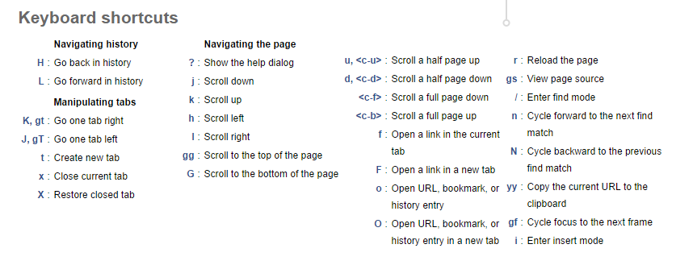
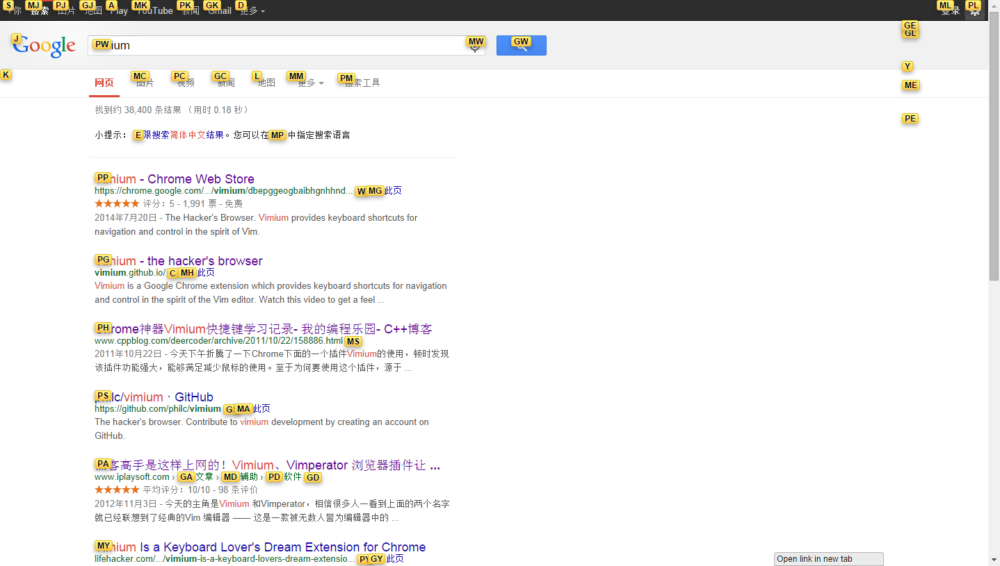

<!DOCTYPE html>
<html>
<head><meta name="generator" content="Hexo 3.9.0">
  <meta charset="utf-8">
  
  <title>Vimium的简单试用 | TAJPURE</title>
  <meta name="mobile-web-app-capable" content="yes">
  <meta name="viewport" content="width=device-width">
  <meta name="description" content="在浏览网页遇到单页很长的页面时，总是觉得食指因为长时间转动鼠标滚球而变得疼痛，而且键盘与鼠标之间的移动无形之中也浪费了很多时间。因此，我想找一个能够让我完全使用键盘来操作浏览器的软件。 在google了一会之后，我发现chrome下的一款插件能够很好地满足我的要求——Vimium。这款插件可以直接在chrome商店里找到，就不另给地址了。安装好了Vimium之后，便开始简单的使用。">
<meta name="keywords" content="chrome插件">
<meta property="og:type" content="article">
<meta property="og:title" content="Vimium的简单试用">
<meta property="og:url" content="https://tajpure.com/2014/09/09/Vimium的简单试用/index.html">
<meta property="og:site_name" content="TAJPURE">
<meta property="og:description" content="在浏览网页遇到单页很长的页面时，总是觉得食指因为长时间转动鼠标滚球而变得疼痛，而且键盘与鼠标之间的移动无形之中也浪费了很多时间。因此，我想找一个能够让我完全使用键盘来操作浏览器的软件。 在google了一会之后，我发现chrome下的一款插件能够很好地满足我的要求——Vimium。这款插件可以直接在chrome商店里找到，就不另给地址了。安装好了Vimium之后，便开始简单的使用。">
<meta property="og:locale" content="en">
<meta property="og:image" content="https://tajpure.com/image/vimium_keyboard.png">
<meta property="og:image" content="https://tajpure.com/image/vimium_screenshot.png">
<meta property="og:updated_time" content="2019-07-05T01:55:22.000Z">
<meta name="twitter:card" content="summary">
<meta name="twitter:title" content="Vimium的简单试用">
<meta name="twitter:description" content="在浏览网页遇到单页很长的页面时，总是觉得食指因为长时间转动鼠标滚球而变得疼痛，而且键盘与鼠标之间的移动无形之中也浪费了很多时间。因此，我想找一个能够让我完全使用键盘来操作浏览器的软件。 在google了一会之后，我发现chrome下的一款插件能够很好地满足我的要求——Vimium。这款插件可以直接在chrome商店里找到，就不另给地址了。安装好了Vimium之后，便开始简单的使用。">
<meta name="twitter:image" content="https://tajpure.com/image/vimium_keyboard.png">
  
    <link rel="alternative" href="/atom.xml" title="TAJPURE" type="application/atom+xml">
  
  
    <link rel="icon" href="/favicon.ico">
  
  <link rel="stylesheet" href="/css/style.css">
  <!--[if lt IE 9]><script src="//html5shiv.googlecode.com/svn/trunk/html5.js"></script><![endif]-->
  
<script type="text/javascript">
  var _gaq = _gaq || [];
  _gaq.push(['_setAccount', 'tajpure@gmail.com']);
  _gaq.push(['_trackPageview']);

  (function() {
    var ga = document.createElement('script'); ga.type = 'text/javascript'; ga.async = true;
    ga.src = ('https:' == document.location.protocol ? 'https://ssl' : 'http://www') + '.google-analytics.com/ga.js';
    var s = document.getElementsByTagName('script')[0]; s.parentNode.insertBefore(ga, s);
  })();
</script>

  <script type="text/javascript" src="/js/material.min.js"></script>
  <link rel="stylesheet" href="/css/material.min.css" type="text/css">
  <link href="https://fonts.googleapis.com/icon?family=Material+Icons" rel="stylesheet">
</head>
</html>
<body>
  <div id="container">
    <div class="mobile-nav-panel">
	<ul class="nav mdl-menu mdl-js-menu mdl-menu--bottom-left mdl-js-ripple-effect" for="menubtn">
		<li  class="mdl-menu__item"><a href="/" style="color:#757575">Home</a></li><li  class="mdl-menu__item"><a href="/archives" style="color:#757575">Archives</a></li><li  class="mdl-menu__item"><a href="/about" style="color:#757575">About</a></li>
		<li  class="mdl-menu__item"><a href="/atom.xml"
			class="nav-icon" title="RSS Feed" style="color:#757575">RSS</a></li>
	</ul>
	<button id="menubtn" class="mdl-button mdl-js-button mdl-js-ripple-effect mdl-button--icon">
		<i class="material-icons" role="presentation">menu</i>
		<span class="visuallyhidden">show menu</span>
	</button>
</div>
<header id="header">
	<nav class="nav">
		<ul>
			<li><a href="/" style="color:#757575">Home</a></li><li><a href="/archives" style="color:#757575">Archives</a></li><li><a href="/about" style="color:#757575">About</a></li>
			<li><a href="/atom.xml"  class="nav-icon" style="color:#757575" title="RSS Feed">RSS</a></li>
		</ul>
	</nav>
</header>

    <div id="main">
      <article id="post-Vimium的简单试用" class="post mdl-card mdl-shadow--2dp" style="width:100%;">
	
	<div class="entry-meta-header date">
		<time datetime="2014-09-09T12:11:37.000Z" itemprop="datePublished">Sep 9 2014</time>

  </div>
	<div class="mdl-card__title">
		
  
    <h1 class="article-title entry-title" itemprop="name">
      Vimium的简单试用
    </h1>
  


	</div>
	<div class="mdl-card__supporting-text" style="margin-top: -1em">
		
    	<p>在浏览网页遇到单页很长的页面时，总是觉得食指因为长时间转动鼠标滚球而变得疼痛，而且键盘与鼠标之间的移动无形之中也浪费了很多时间。因此，我想找一个能够让我完全使用键盘来操作浏览器的软件。</p>
<p>在google了一会之后，我发现chrome下的一款插件能够很好地满足我的要求——Vimium。这款插件可以直接在chrome商店里找到，就不另给地址了。<br>安装好了Vimium之后，便开始简单的使用。<br><a id="more"></a></p>
<p>首先是了解一些基础的组合键功能，大致的清单如下：<br></p>
<p>其中类似<c-u>键指的是ctrl+u键，和vim中的表示一样</c-u></p>
<p>这些功能基本上能够让我完全脱离鼠标了，下面是一张使用时的截图：</p>
<p></p>
<p>想跳转至哪个链接，直接在键盘输入相应的字符就可以了。推荐在vimium配置中，将用于链接的提示字符(Characters used for link hints)中的f替换成y或者其他提示字符串中没有的字符，这样你就可以按一下f出现链接提示字符再按一下取消，便于操作。</p>
<p>使用Vimium之后浏览网页就不再需要鼠标了，不过好像只有firefox与chrome支持类似的插件，其它浏览器就不知道了。</p>

    
	</div>
	
    
<nav id="article-nav">
  
    <a href="/2014/09/09/HN-Special,一款Hacker-News的界面优化插件/" id="article-nav-newer" class="article-nav-link-wrap">
      <strong class="article-nav-caption">Newer</strong>
      <div class="article-nav-title">
        
          HN Special,一款Hacker News的界面优化插件
        
      </div>
    </a>
  
  
    <a href="/2014/08/30/使用Micorsoft-Visual-Studio入门LLVM/" id="article-nav-older" class="article-nav-link-wrap">
      <strong class="article-nav-caption">Older</strong>
      <div class="article-nav-title">
        
          使用Micorsoft Visual Studio入门LLVM
        
      </div>
    </a>
  
</nav>

  

	
	<section id="comments">
	  <div id="disqus_thread" style="padding:20px;">
	    <noscript>Please enable JavaScript to view the <a href="//disqus.com/?ref_noscript">comments powered by Disqus.</a></noscript>
	  </div>
	</section>
	
</article>

    </div>
    <!-- <div class="mb-search">
  <form action="//google.com/search" method="get" accept-charset="utf-8">
    <input type="search" name="q" results="0" placeholder="Search">
    <input type="hidden" name="q" value="site:tajpure.com">
  </form>
</div> -->
<footer id="footer">
	<span class="copyright">
    &copy; 2012-2019 tajpure<br>
	</span>
  <br>
	<!-- ICON NEEDS FONT AWESOME FOR CHEVRON UP ICON -->
	<link href="//netdna.bootstrapcdn.com/font-awesome/3.2.1/css/font-awesome.css" rel="stylesheet">
	<a href="javascript:" id="return-to-top"><i class="icon-chevron-up"></i></a>
</footer>

    
<script>
  var disqus_shortname = 'tajpure';
  
  var disqus_url = 'https://tajpure.com/2014/09/09/Vimium的简单试用/';
  
  (function(){
    var dsq = document.createElement('script');
    dsq.type = 'text/javascript';
    dsq.async = true;
    dsq.src = '//go.disqus.com/embed.js';
    (document.getElementsByTagName('head')[0] || document.getElementsByTagName('body')[0]).appendChild(dsq);
  })();
</script>


<script src="https://www.tajpure.com/js/jquery.min.js"></script>


<script src="/js/script.js"></script>

  </div>
</body>
</html>
